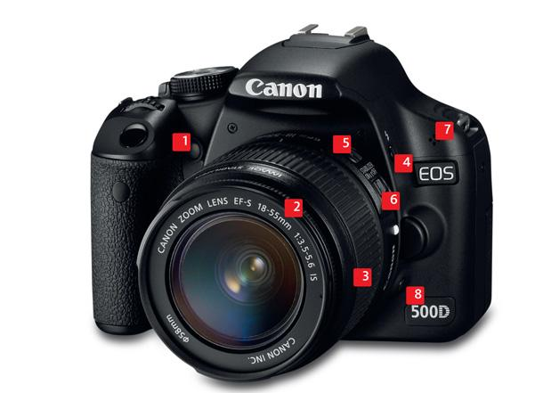

Ở máy ảnh Canon hiện nay tại Việt Nam phổ biến chia làm 3 dòng:
1. Dòng dành cho những người mới chơi (Entry Level) bao gồm các dòng máy có 3 và 4 chữ số trước chữ D. Ví dụ 1100D, 400D… gọi chung là xxxxD hay xxxD. Đây là các dòng máy nhỏ, phục vụ cho mục đích du lịch, vui chơi, chụp cho vui, nhưng vẫn mang trong mình sức mạnh của các dòng máy DSLR không khác chuyên nghiệp là mấy. Đây là dòng máy sử dụng cảm biến APS-C có hệ số Crop 1,6x.
2. Dòng dành cho những người đã biết chơi ảnh được gọi là bán chuyên nghiệp (Semi-Professional). Dòng này bao gồm các loại máy có 2 chữ số trước chữ D. Ví dụ: 30D, 40D… gọi chung là xxD. Và trong dòng này có 2 dòng đặc biệt có tên gồm 1 chữ số khác với chuẩn chung là 7D và 6D. Hiện nay 7D đã có Mark 2, và xxD cao nhất hiện tại là 80D. Đây là dòng máy sử dụng cảm biến APS-C có hệ số Crop 1,6x, riêng dòng 6D sử dụng cảm biến Full frame.
3. Dòng dành cho những tay máy chuyên nghiệp (Professional). Dòng này bao gồm các dòng máy có 1 chữ số trước chữ D gọi chung là xD. Ví dụ: 5D, 1D. Hiện nay phiên bản mới nhất của dòng này là 5D Mark 4. Trong đó riêng dòng 1D được phân chia ra làm 4 dòng riêng phục vụ cho mục đích riêng của người chơi là 1D, 1Ds, 1Dx, và 1Dc (Đây là dòng chuyên cho quay phim). Riêng dòng 5D thì được chia ra làm 3 là: 5D, 5Ds, 5DsR. Đây là dòng máy sử dụng cảm biến Full frame. Riêng dòng 1D sử dụng cảm biến APS-H với hệ số Crop là 1,3x.
* Lưu ý: Ở Canon sử dụng chữ La Mã và chữ Mark để biểu hiện cho đời máy. Chữ Mark I, II, III, IV,… càng lớn thì dòng máy càng mới. Riêng dòng Semi-Pro thì đời máy càng lớn thì số càng cao, mới nhất hiện nay là 80D.
Cấu trúc của các dòng máy Canon thường giống nhau, thông thường dòng máy càng cao càng chuyên nghiệp thì nút chức năng sẽ nhiều hơn, cảm biến sẽ lớn hơn. Tuy nhiên vẫn có 1 số khác biệt, ví dụ như 6D sử dụng cảm biến Full frame hay 1D sử dụng cảm biến APS-H Crop 1,3x.
Bây giờ chúng ta sẽ tìm hiểu các nút chức năng trên 1 DSLR của Canon
Các phím nóng phía trước máy.

1. Đèn hồng ngoại:
Chiếc đèn nhỏ này có tác dụng dừng đèn flash và tác động tới võng mạc của chủ thể, trước khi flash đánh, làm giảm thiểu hiệu ứng mắt đỏ khi chụp. Chiếc đèn này còn có tác dụng đếm ngược thời gian khi đặt chế độ chụp hẹn giờ.
2. Vòng lấy nét trên ống kính (Nikon cũng tương tự)
Trong chế độ Auto Focus, vòng này tự động xoay để lấy nét, còn ở chế độ Manual Focus, bạn phải tự xoay vòng này để lấy nét, khá khó khan nếu bạn chưa quen nhưng bạn sẽ có thể lấy nét chính xác vào điểm bạn muốn.
3. Vòng zoom trên ống kính (Nikon cũng tương tự)
Vòng zoom cho phép bạn thay đổi tiêu cự, để phù hợp với từng góc chụp, từng nhu cầu chụp, từ chân dung/ tele hay macro cho tới phong cảnh.
4. Nút flash
Bạn có thể sử dụng để tùy chỉnh sử dụng đèn flash theo nhu cầu của mình.
5. Chuyển chế độ lấy nét trên ống kính Canon
Nút này dùng để chuyển giữa 2 chế độ Manual Focus (MF-Lấy nét tay) và Auto Focus (AF-Lấy nét tự động).
6. Chuyển chế độ Image Stablilize (Chế động chống rung)
IS (Image Stabilizer) đối với ống kính của Canon được thiết kế để ngăn chặn hiện tượng ảnh bị mờ, nhòe do rung ống kính.
* Còn đối với ống kính của Nikon là VR (Vibration Reduction)
7.Built-in microphone (Micro tích hợp dành cho quay phim)
Hầu hết các máy ảnh hiện nay đều được tích hợp khả năng quay video, âm thanh được ghi lại thông qua một microphone được tích hợp sẵn trên body.
8. Độ sâu trường ảnh (Nút DOF)
Khi nhấn vào nút này, hình ảnh sẽ được tạm thời ghi lại, bạn có thể điều chỉnh các thông số, và ngay lập tức các thông số này sẽ tác động lên ảnh, bạn có thể chọn cho mình thông số phù hợp nhất cho từng bức ảnh. Thông thường thì nút này ít thấy có tác dụng)
Các phím nóng phía sau máy
1.Bù sáng
Khi bạn chụp ảnh ở chế độ M (Manual) phím xoay này có tác dụng bù sáng để phù hợp với từng điều kiện sáng khác nhau, trong một số chế độ chụp khác, nó có tác dụng khác như chỉnh độ mở ống kính …
2.Chọn điểm lấy nét
Đúng như tên gọi, nó cho phép bạn lấy nét vào điểm mà bạn muốn, trong khung hình và trong giới hạn cho phép của máy.
Trên các dòng máy cao cấp, chỗ này có 1 nút nữa là nút AF-ON như hình:
Cách sử dụng là bấm giữ nút này để lấy nét, giống như khi bạn bấm ½ nút cò chụp. Thao tác này sẽ nhanh hơn và sử dụng để giữ nét đến đối tượng khi bạn chụp liên tục trong 1 môi trường và khoảng cách đến đối tượng là không thay đổi, bạn chỉ việc giữ nút này liên tục và bấm nút cò chụp)
3. Khóa AE (Khóa sáng)
Nút này cho phép bạn khóa phơi sáng của máy khi máy đã hiển thị đầy đủ thông số về ánh sáng của bức ảnh.
4. LiveView/Quay phim/Format thẻ nhớ
Tính năng có lẽ đã quá quen thuộc, hỗ trợ mọi thao tác như viewfinder trên màn hình của máy. Nút này còn có thể dùng để quay phim hoặc format thẻ nhớ
5. Phím di chuyển
Phím này có tác dụng giúp bạn di chuyển trong menu, hay chuyển đổi qua ảnh khác trong chế độ xem ảnh. Hay tùy chỉnh các thông số bạn đang lựa chọn…
* Lưu ý: Trên các dòng máy đời cao thì nút này là 1 bánh xe xoay tròn và có nút Set ở giữa để chọn thiết lập.
6. Self-time
Nút này cho phép bạn thay đổi chế độ chụp đơn, hay chụp liên tục, hoặc chế độ hẹn giờ chụp.
7. Playback
Giúp bạn xem lại các hình đã chụp
8. Earase
Đơn giản như biểu tượng, xóa đi các tấm ảnh bạn không hài lòng.
9. Phím Menu
Mọi cài đặt của máy nằm sau phím bấm này.
Trên đỉnh máy
1.Đèn flash
Thường được gọi với cái tên “flash cóc” đây là công cụ hỗ trợ chụp ảnh khi ánh sáng không đủ, tuy nhiên với người dùng chuyên nghiệp, “flash cóc” được coi chỉ để “chống mù”
2. Nút chụp hay cò chụp:
Với nguyên tắc hoạt động, khi bấm ½ nút máy sẽ bắt đầu lấy nét, ½ tiếp theo sẽ chụp.
3. Vòng quay chính
Vòng xoay đảm nhận khá nhiều nhiệm vụ, khi hoạt động độc lập hay kết hợp cùng phím bấm chức năng nào đó. Ví dụ: Điều chỉnh Khẩu độ khi ở chế độ ưu tiên Khẩu độ (Av), hoặc điều chỉnh Tốc độ khi ở chế độ ưu tiên Tốc độ (Tv)
4. Nút ISO
Việc thay đổi ISO sẽ được thay đổi khi bạn bấm nút này, kết hợp với vòng xoay chính hoặc bánh xe (ở dòng máy xxD hoặc xD).
5. Nút nguồn
Bật/Tắt máy là công dụng chính của nút bấm này (ở các dòng xxD và xD thì nút này nằm phía dưới, luôn có chữ ON hoặc OFF hoặc được đánh dấu gạch trắng).
6. Nút chọn chế độ chụp
Vòng xoay để chuyển đổi các chế độ chụp khác nhau như: M, Av, Tv, Auto, P, A, S,…
* Lưu ý: Ở một số dòng máy như 60D hay 6D… nút này có thêm một nút phía trên, để xoay được cần phải vừa bấm nút vừa xoay (Nếu không bấm nút mà xoay sẽ gãy lẫy phía trong và văng nút ra ngoài).
7. Hot shoe
Kết nối với phụ kiện flash rời.